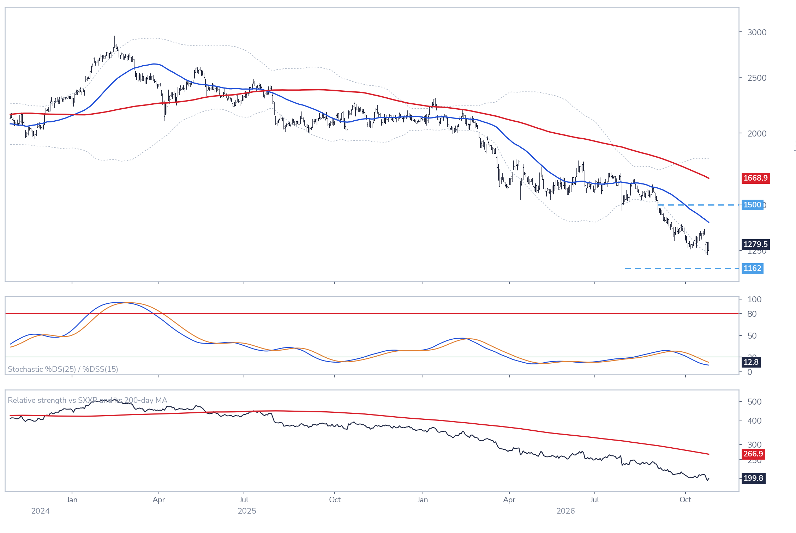

Hermès: valuation and technical charts
RMS FPChart 2 · RMS: share price vs. consensus earnings and valuation
Weekly, January 2005 to 22 October 2026 · 12-month forward consensus EPS · 40-week moving average · Log scale

Expected earnings kept rising while the share fell: the multiple dropped to 29.3x from 51.1x a year ago. Source: Syz Research, Bloomberg.
Chart 3 · RMS: trend, momentum and relative strength
Daily · 50-day (blue) and 200-day (red) averages with Bollinger bands · Stochastic · Ratio to the Stoxx 600 with its 200-day average

The share trades below a falling 200-day average after breaking its September low; the stochastic is deeply oversold and relative strength is at a one-year low. Charts as of 26 October 2026. Source: Syz Research, Bloomberg.